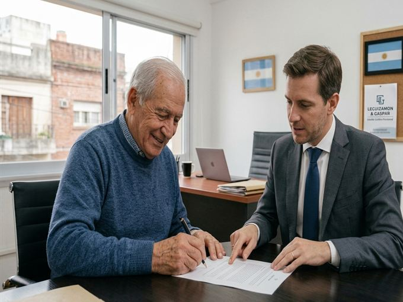
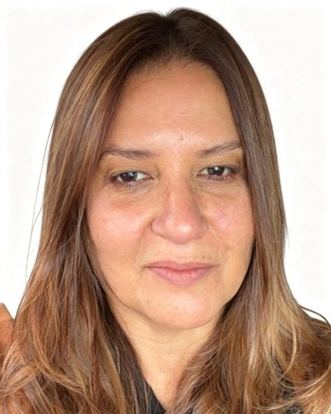

Leguizamón & Gaspar
Estudio jurídico en Lomas de Zamora

Jubilación docente IPS
Somos un estudio jurídico integral, especializado en jubilaciones docentes.
Si usted es docente en la Provincia de Buenos Aires y se está por jubilar, analizamos su caso y nos ocupamos del trámite ante el IPS. Atendemos en toda la provincia, en forma presencial u online.
Su jubilación como docente
Tres pasos, desde el primer mensaje hasta el expediente en el IPS.
-
1
Contacto directo por WhatsApp
Nos cuenta brevemente su situación por mensaje o por el formulario. Es gratuito, confidencial y sin compromiso.
-
2
Análisis legal del caso
Coordinamos una entrevista presencial o virtual, evaluamos sus antecedentes y le explicamos cómo seguir, sin tecnicismos.
-
3
Gestión y representación
Lo asesoramos para reunir la documentación, iniciamos el expediente virtual ante el IPS y lo mantenemos informado hasta el final del trámite.
Tipos de jubilación que tramitamos
- Jubilación ordinaria
- Jubilación por cierre de cómputos
- Jubilación anticipada
- Jubilación por edad avanzada
Cada una tiene sus requisitos. Los revisamos con usted en la consulta.
Otros temas que atendemos
Además de las jubilaciones docentes, atendemos consultas en Lomas de Zamora y la zona sur.
Derecho de Familia
Divorcios, cuidado personal de los hijos, régimen de comunicación, cuota alimentaria y filiación.
Consultar por WhatsAppDerecho Laboral
Reclamos ante ART, despidos, intercambio de telegramas y liquidaciones, para trabajadores y empleadores.
Consultar por WhatsAppDerecho Civil
Sucesiones, desalojos, división de condominio, accidentes de tránsito y daños y perjuicios.
Consultar por WhatsAppDerecho Previsional (ANSES)
Jubilaciones ordinarias y por invalidez, pensiones por fallecimiento, reajustes de haberes y moratorias previsionales.
Consultar por WhatsAppEl estudio
Con más de quince años de ejercicio de la profesión, asesoramos y representamos a trabajadores de la educación en sus trámites ante el IPS de la Provincia de Buenos Aires.
Lo acompañamos desde la primera consulta hasta el cierre y lo mantenemos al tanto de cada avance del expediente. Por eso analizamos cada caso en detalle antes de proponer una estrategia, y le explicamos todo en un lenguaje claro, sin vueltas.

- Abogados
- Dr. Edgardo Oscar Leguizamón
Dra. Amelia Lorena Gaspar - Atención
- Lunes, miércoles y viernes, de 15 a 18 h
Presencial u online - Oficina
- Boedo 355, 1.º piso, of. 4, Lomas de Zamora
Preguntas frecuentes
¿A qué edad puedo jubilarme?
Depende de sus años de servicio y del tipo de tarea. Para docentes, el régimen del IPS prevé estas combinaciones:
- 50 años de edad y 25 de servicios docentes al frente directo de alumnos (o como profesor con 20 horas cátedra).
- 50 años y 25 de servicios docentes, si al menos 10 fueron al frente de alumnos.
- 55 años y 30 de servicios docentes en cualquier rama.
Si no alcanza esos requisitos, existe la jubilación por edad avanzada, a partir de los 65 años.
¿Cuántos años de aportes necesito para jubilarme?
Para la jubilación ordinaria docente se piden 25 o 30 años de servicios, según el caso, y al menos 22 años con aportes en una o más cajas del sistema de reciprocidad. Para la jubilación por edad avanzada se necesitan como mínimo 10 años de servicios con afiliación al IPS, y 5 de ellos tienen que estar dentro de los 8 años anteriores al cese.
¿Con qué porcentaje puedo jubilarme?
La jubilación ordinaria equivale, en general, al 70% de la remuneración del cargo. Para el docente al frente directo de alumnos es del 75%. Si al cesar supera en 3 o en 5 años la edad requerida y siguió aportando al IPS, el porcentaje aumenta. La jubilación por edad avanzada parte del 50% del haber ordinario y suma un 2% por cada año de aportes por encima de 10.
¿Cómo se calcula el haber que voy a cobrar cuando me jubile?
Se toma como base la remuneración del cargo que tenía al cesar o la del cargo de mayor jerarquía que haya desempeñado, incluidos los suplementos y bonificaciones habituales. Sobre ese monto se aplica el porcentaje que le corresponda. Si tuvo cargos simultáneos, en algunos casos se suma una parte proporcional por ellos. Después, el haber se actualiza cuando aumentan los sueldos del personal en actividad.
¿Con qué cargo me voy a jubilar?
Puede ser el cargo que tenía al momento del cese o el de mayor jerarquía que haya ocupado, siempre que lo haya ejercido al menos 36 meses seguidos o 60 meses alternados. Si no llega a ese tiempo, se toma el cargo inmediato inferior. Por eso conviene revisar toda su historia de cargos antes de iniciar el trámite.
Si tengo aportes en ANSES, ¿me sirven para sumar años de aportes?
Sí. Por el sistema de reciprocidad se pueden sumar los servicios con aportes en otras cajas, incluida ANSES, para obtener una única jubilación. La otorga la caja en la que usted tenga más años con aportes, y cuando hay servicios de distinto tipo, los requisitos se calculan en proporción. Vale la pena analizarlo antes de presentar el trámite.
Esta información es general y no reemplaza el análisis de su caso. Cada situación se revisa en la consulta.
Contacto
Atención con turno previo, presencial u online. Coordínelo por WhatsApp o por teléfono.
- Tel / WhatsApp 11 2280-3341 Dr. Leguizamón 11 5654-8642 Dra. Gaspar
- Mail oscar-leguizamon@outlook.com
- Cómo llegar Boedo 355, 1.º piso, of. 4, Lomas de Zamora
- Redes Facebook
Horario: lunes, miércoles y viernes, de 15 a 18 h.